Argues that the prompt box is functionally still a punch-card batch protocol -- assemble a complete turn, submit, wait -- even though model expression capacity has exploded, and uses real voice-mode demos (GPT Realtime 2 backchanneling, ...
This traces the talk's argument from rising model capacity through the punch-card critique of prompting to the newer voice demos it uses as a counterexample (ours).
“I'll give you three key concepts. The channel, the physical transport that carries your intent, expression, the range and richness of meaning the channel can carry, and the protocol, the shape or rules of this exchange”
said at 01:38“Here's the patent drawing for the layout we use every day. This patent's from about 1860.”
said at 02:40“the protocol, prompting, is the protocol of a punch card. And the punch card's protocol is good old batch”
said at 06:18“We trade incantations. We've learned the magic words. That's the illusion. It feels like mastery, but it's the same sort of mastery a punch card operator had”
said at 07:52“Model capacity is shooting straight up. Reasoning, speech, vision, memory, planning, all curving upwards. The interface protocol, flat”
said at 09:55“He wasn't talking to the AI. But these models have no way to know that. So the AI did the only thing a prompt box can do. It took his speech as a turn and answered it”
said at 10:58“OpenAI released GPT real-time 2 in late May and started trying it for their voice mode as well. It backchannels now. It goes, "Mhm." and right”
said at 12:00“Personal Plex stops. It yields. It picks the thread back up. That's real turn taking, listening and speaking at once in real time”
said at 13:02“It needs to become what burden are we still putting on humans only because the machine used to be too limited to carry that burden itself”
said at 17:50“Sherry Turkle at MIT puts it very well. Conversation is the most human and humanizing thing we do. It's one of humanity's superpowers”
said at 09:00The Persona Plex and GPT Realtime 2 examples are both narrow voice-mode demos, not general-purpose text interfaces, so the punch-card critique is strongest for voice/agent products and less obviously actionable for teams still shipping a plain chat box (ours).
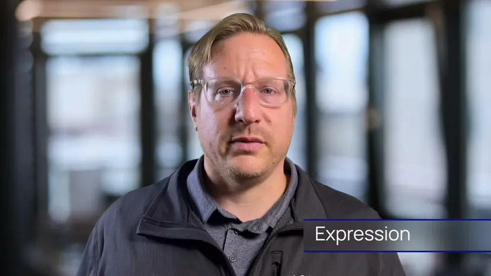
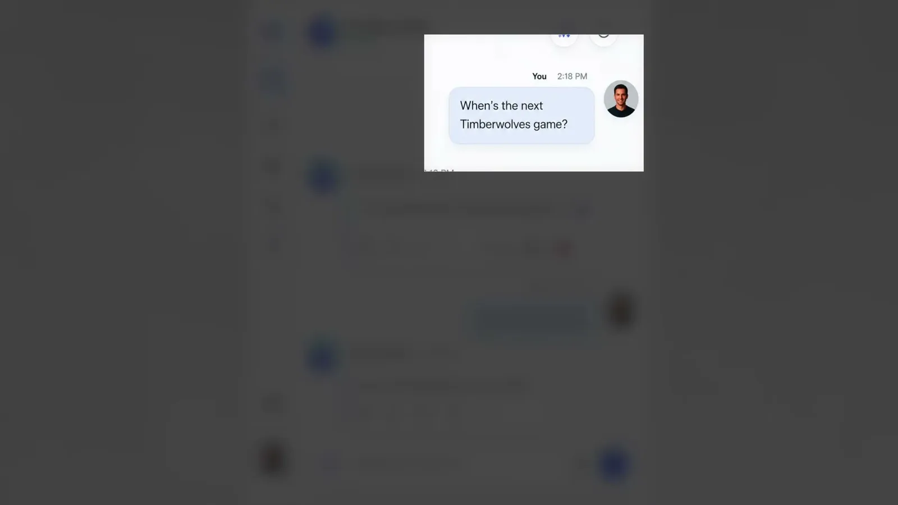
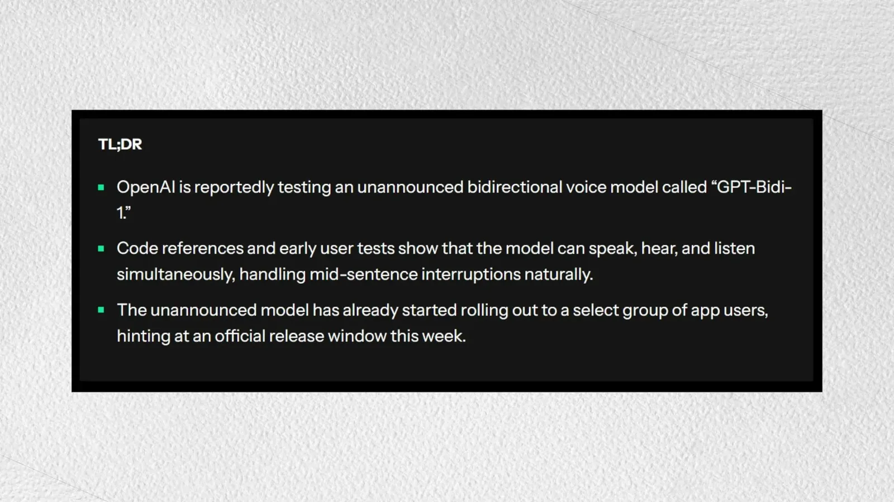
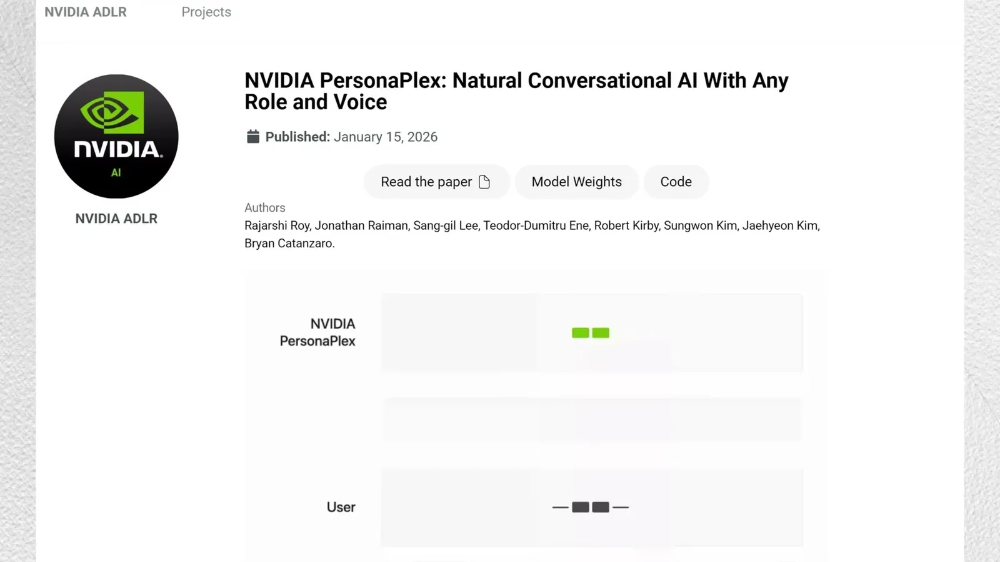
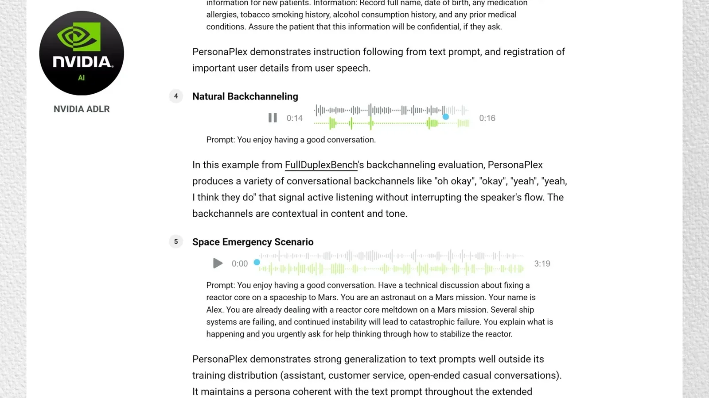
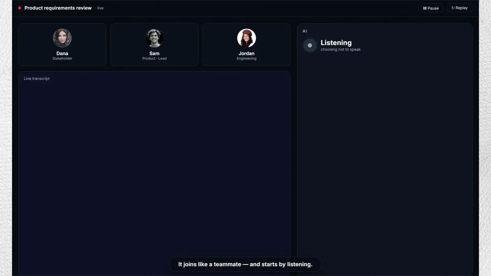
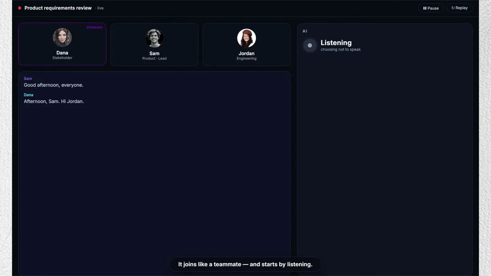
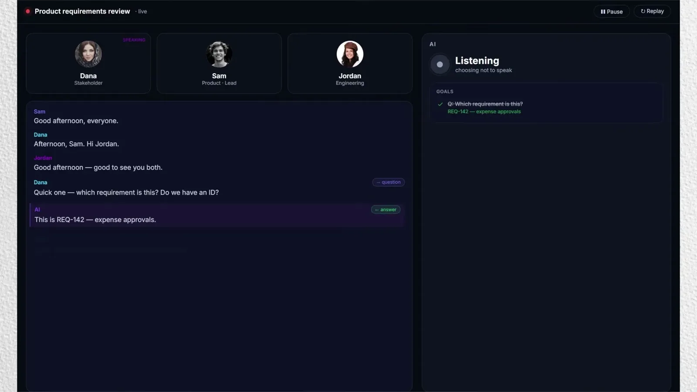
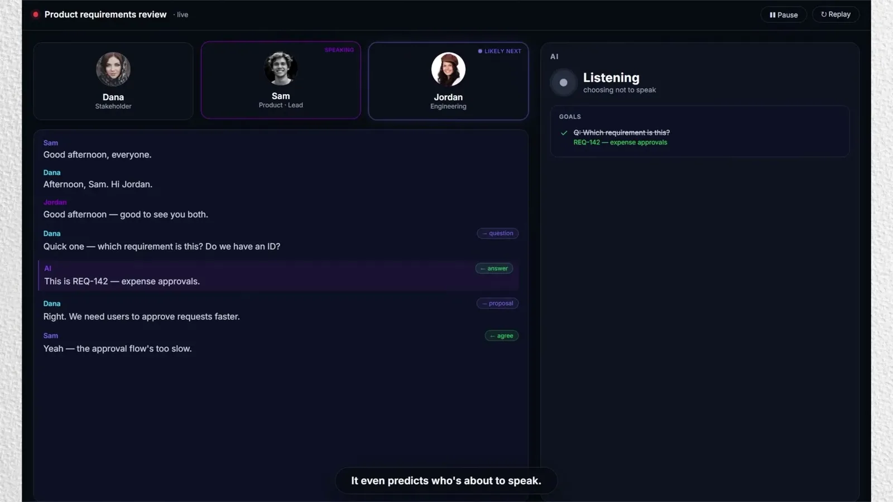
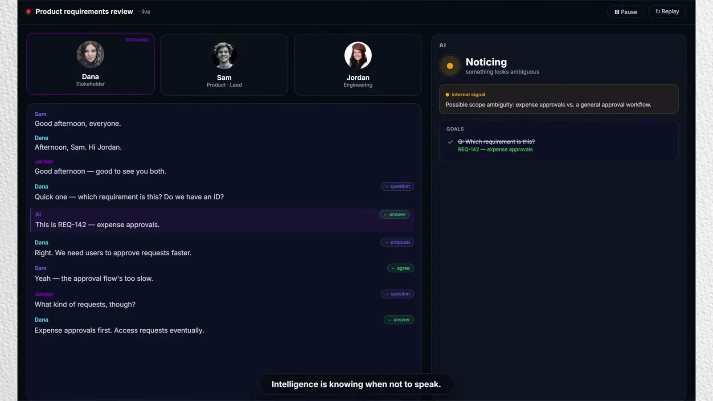
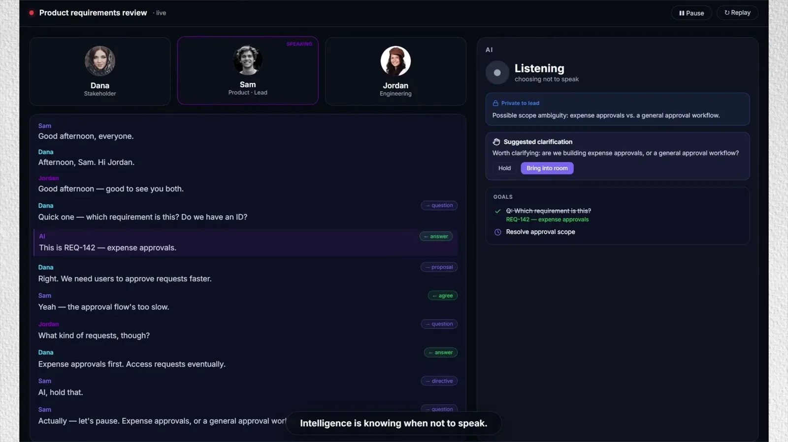
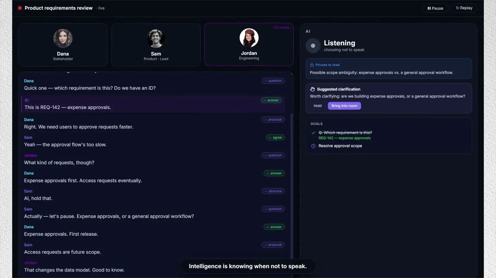
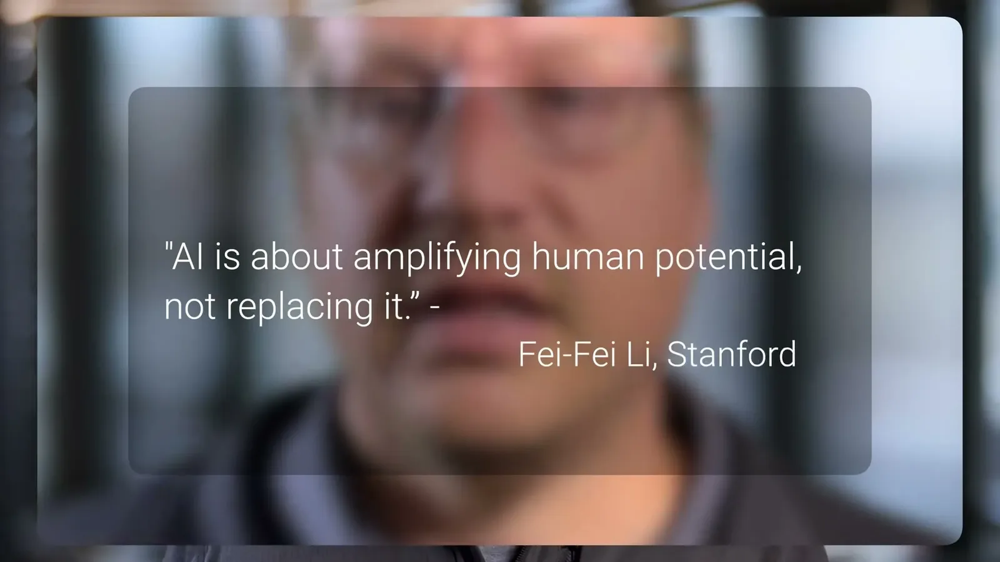
| Stance | Claim | t |
|---|---|---|
| asserts | The talk uses three concepts to analyze AI interfaces: channel (the physical transport), expression (the range of meaning it can carry), and protocol (the rules of the exchange). | 01:38 |
| asserts | The everyday keyboard layout traces to a patent from about 1860, an inherited legacy device. | 02:40 |
| warns | The prompting protocol is structurally the same as a punch card's batch protocol: assemble, submit, wait. | 06:18 |
| warns | Prompt engineering is a set of rules for packaging a batch request, comparable to a punch-card operator's deck-assembly skill, not true interactive mastery. | 07:52 |
| warns | Model capacity across reasoning, speech, vision, memory, and planning is rising sharply while the interface protocol has remained flat. | 09:55 |
| asserts | A frontier voice-mode model answered a side comment ('Hey Ted, come on in') as if it were a turn addressed to it, because the protocol has no concept of who's speaking. | 10:58 |
| asserts | OpenAI released GPT Realtime 2 in late May and its voice mode now backchannels with sounds like 'Mhm' and 'right.' | 12:00 |
| asserts | NVIDIA's Persona Plex research model demonstrated real turn-taking, stopping mid-sentence when interrupted, yielding, and resuming the thread afterward. | 13:02 |
| recommends | Interface design should ask what burden is still placed on humans only because machines used to be too limited to carry it themselves. | 17:50 |
| asserts | MIT's Sherry Turkle describes conversation as the most human and humanizing thing people do, one of humanity's superpowers. | 09:00 |
Machine-readable copy embedded in this page (script#ontology) and in the corpus ontology.